About the 2D Graphics Engine
What is this?
This is a 2D graphics API similar to OpenGL, but focused on 2D rendering instead of 3D. Just like OpenGL provides functions for drawing triangles and applying textures in 3D space, this engine provides a complete API for 2D drawing operations.
It's a software renderer built from scratch in C++, implementing functionality found in production libraries like Skia (used by Chrome and Android), Cairo (used by GTK and Firefox), and the HTML5 Canvas API. You give it high-level drawing commands—"draw a rectangle," "fill a path with a gradient," "apply a matrix transformation"—and it produces the actual pixel colors on screen.
Key Features:
- Shape Drawing: Rectangles, polygons, paths with curves
- Transformations: 2D affine matrices (translate, rotate, scale) with CTM stack
- Shaders: Solid colors, linear/radial/sweep gradients, bitmap textures with tile modes
- Compositing: Porter-Duff blend modes (12 modes including src-over, xor, multiply)
- Path Rendering: Winding fill rule, Bezier curve tessellation
- Advanced Geometry: Triangle meshes, Coons patches, shader composition
Technologies Used
- C++17: Core rendering engine implementation with hand-optimized rasterization algorithms
- WebAssembly: Compiles C++ to bytecode that runs at near-native speed in the browser
- Emscripten: Toolchain for compiling C++ to WebAssembly and generating JavaScript bindings
- HTML5 Canvas API: Display target for the rendered pixel buffer (ARGB → RGBA at 60fps)
The Rendering Pipeline
Every draw call flows through this pipeline, transforming high-level commands into pixel colors:
Draw Call
High-level command
→
Transform
Apply CTM matrix
→
Clip
Constrain to viewport
→
Rasterize
Edges to pixels
→
→
→
Example Renders
Here are some example outputs from the graphics engine, showcasing various rendering capabilities including blend modes, gradients, paths, meshes, and bitmap textures.
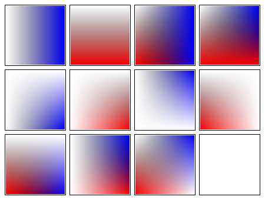
Porter-Duff Blend Modes
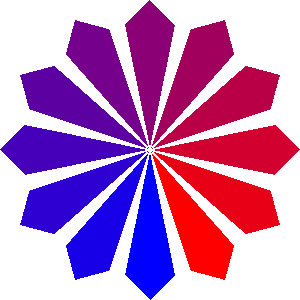
Radial Gradient with Color Stops
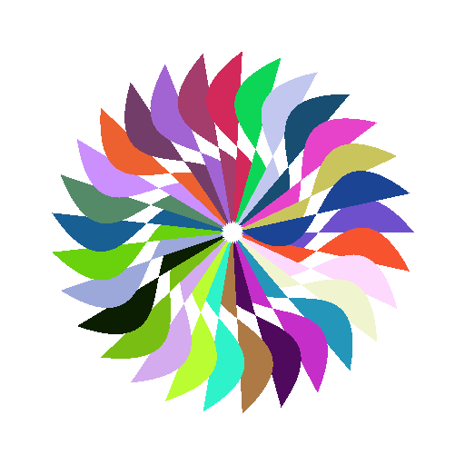
Cubic Bezier Curve Tessellation
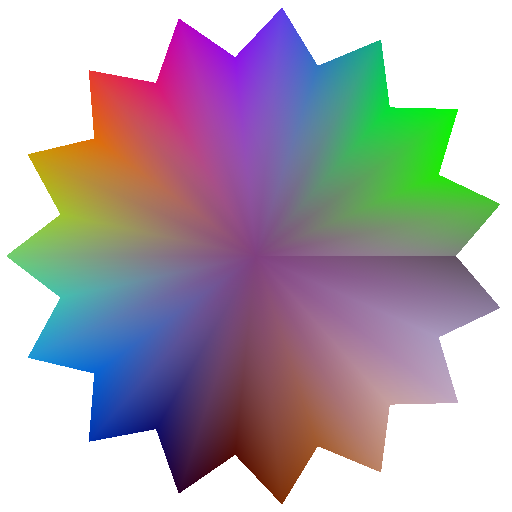
Triangle Mesh with Texture Mapping
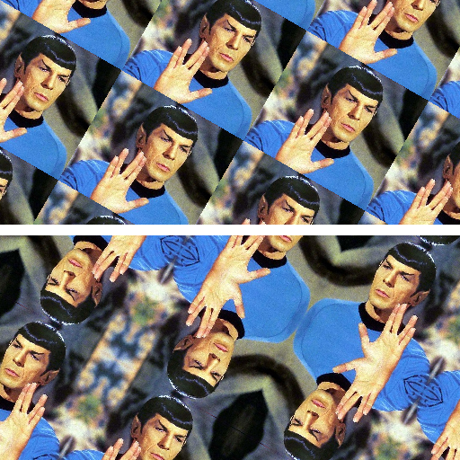
Bitmap Shader Tile Modes
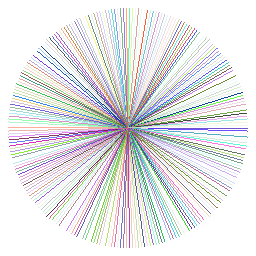
Sweep Gradient Color Wheel
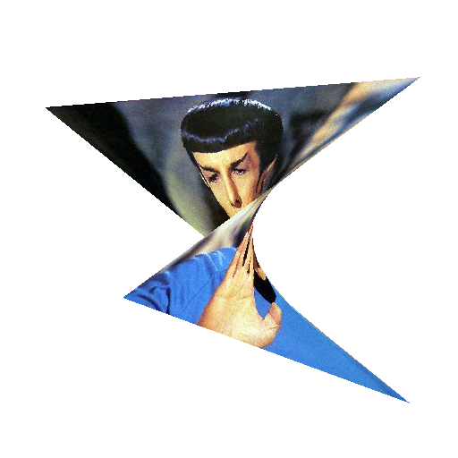
Quad Rendering with Bilinear Interpolation
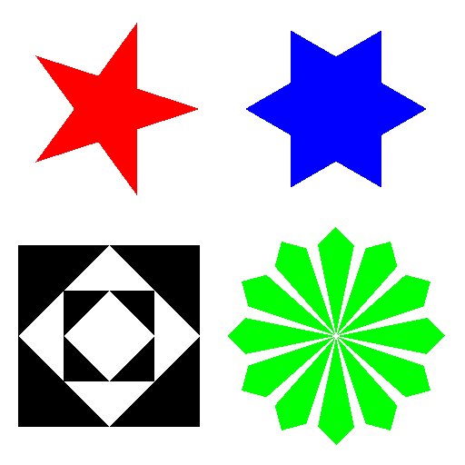
Path Winding Fill Algorithm
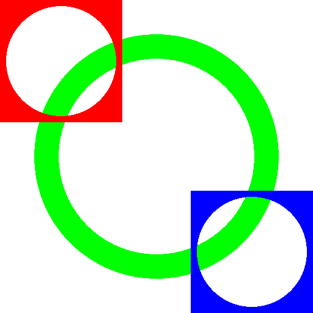
Stroke Rendering with Transformations
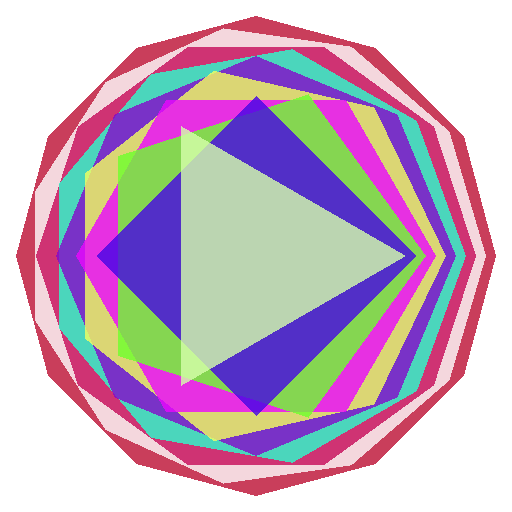
Convex Polygon Rasterization
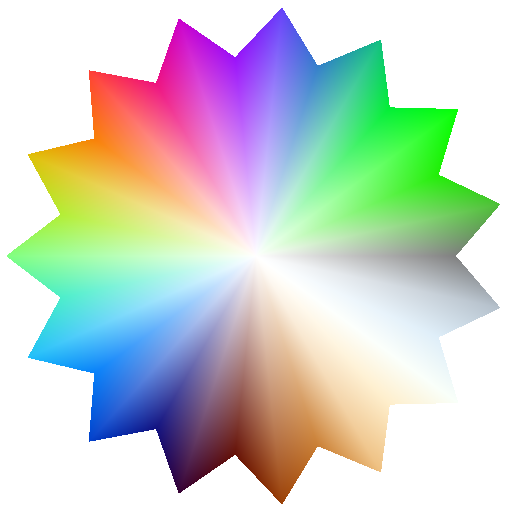
Mesh with Sweep Gradient Shader
Bitmap Texture with Mirror Tiling
Explore the Implementation
Each documentation page explains the algorithms, shows the C++ implementation, and provides interactive demos for different aspects of the rendering engine.
Core Rendering
Edge rasterization, shape drawing, Porter-Duff blend modes, polygon clipping
Transformations & Textures
Matrix math, CTM stack, bitmap shader with tile modes
Paths & Gradients
GPath construction, winding fill, linear and radial gradients
Advanced Geometry
Bezier curves, triangle meshes, quad rendering, shader composition
Advanced Features
Sweep gradient, color matrix, stroke polygon, Coons patches
Optimization & Performance
Fixed-point division, blend fast paths, static dispatch, memory access patterns
Feature Catalog
Comprehensive list of all rendering capabilities organized by category. Click to expand and see detailed feature descriptions with links to documentation.
View All Engine Capabilities (26 Features)
1. Core Rendering
Fundamental drawing operations: shape rasterization, edge-list algorithm, Porter-Duff compositing.
- Edge Rasterization – Scanline algorithm using sorted edge list for efficient pixel coverage (my_canvas.cpp) → Docs
- Rectangle Drawing – Optimized axis-aligned rectangle fill with clipping (my_canvas.cpp) → Docs
- Polygon Drawing – Convex polygon rasterization using edge walking (my_canvas.cpp) → Docs
- Porter-Duff Blending – 12 compositing modes including src-over, xor, multiply (blend_functions.h) → Docs
- Polygon Clipping – Sutherland-Hodgman algorithm for viewport clipping (my_canvas.cpp) → Docs
2. Shaders & Textures
Shader pipeline: solid colors, gradients (linear, radial, sweep), bitmap textures with tile modes.
- Solid Color Shader – Simple constant color shader with alpha channel support (shader_ops.h) → Docs
- Linear Gradient – Color interpolation along a line with multiple color stops (shader_ops.h) → Docs
- Radial Gradient – Circular gradient radiating from center point (shader_ops.h) → Docs
- Sweep Gradient – Angle-based gradient (atan2) for color wheels (shader_ops.h) → Docs
- Bitmap Shader – Texture mapping with clamp, repeat, and mirror tile modes (shader_ops.h) → Docs
- Shader Composition – ProxyShader and ComposeShader for chaining transformations (shader_ops.h) → Docs
3. Transformations
2D affine transformations: translate, rotate, scale, shear. Current Transformation Matrix (CTM) stack for hierarchical transforms.
- Matrix Transform – 3x3 homogeneous coordinate matrix for 2D affine transforms (my_canvas.cpp) → Docs
- CTM Stack – save() and restore() for hierarchical transformation management (my_canvas.cpp) → Docs
- Translate – Move coordinate system by (dx, dy) (my_canvas.cpp) → Docs
- Rotate – Rotate coordinate system by angle (radians) (my_canvas.cpp) → Docs
- Scale – Scale coordinate system by (sx, sy) (my_canvas.cpp) → Docs
4. Paths & Curves
Path construction, winding fill rule, Bezier curve tessellation for smooth curves.
- GPath Construction – Moveto, lineto, quadto, cubicto path building (path_ops.h) → Docs
- Winding Fill Rule – Non-zero winding rule for complex path filling (my_canvas.cpp) → Docs
- Quadratic Bezier – Smooth quadratic curves with adaptive tessellation (path_ops.h) → Docs
- Cubic Bezier – Complex cubic curves with adaptive subdivision (path_ops.h) → Docs
- Path Transformation – Apply arbitrary matrix to path vertices (path_ops.h) → Docs
5. Advanced Geometry
Triangle meshes, quad rendering, Coons patches for complex surface modeling.
- Triangle Mesh – Vertex array with per-vertex colors and texture coordinates (my_canvas.cpp) → Docs
- Quad Rendering – 4-point texture mapping with bilinear interpolation (my_canvas.cpp) → Docs
- Coons Patches – Bicubic surface interpolation from 4 boundary curves (my_final.cpp) → Docs
- Barycentric Interpolation – Smooth color/texture blending across triangle faces (my_canvas.cpp) → Docs
6. Optimization & Performance
Performance optimizations for real-time software rendering.
- Fixed-Point Division – Fast div255 approximation using shifts (10x faster) (my_utils.h) → Docs
- Blend Fast Paths – Alpha-based optimization (opaque/transparent shortcuts) (blend_functions.h) → Docs
- Static Dispatch – Template-based blend dispatch (eliminates function call overhead) (blend_functions.h) → Docs
- Scanline Rendering – Sequential memory access for 95%+ cache hit rate (my_canvas.cpp) → Docs